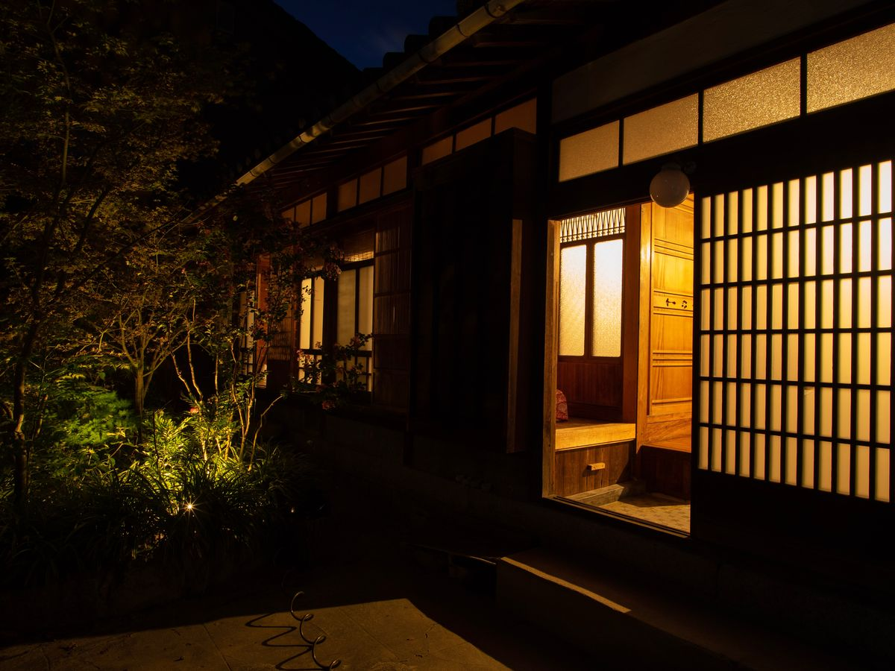
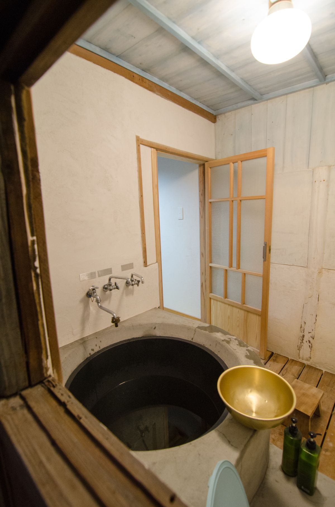
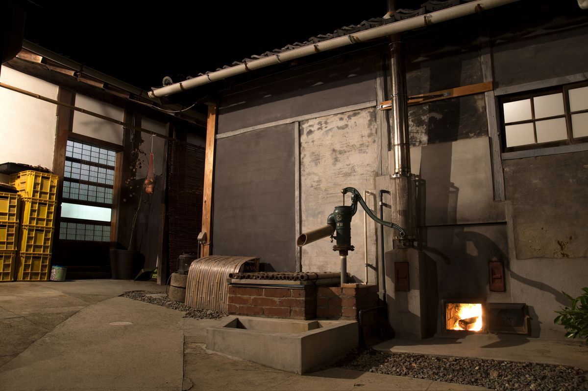
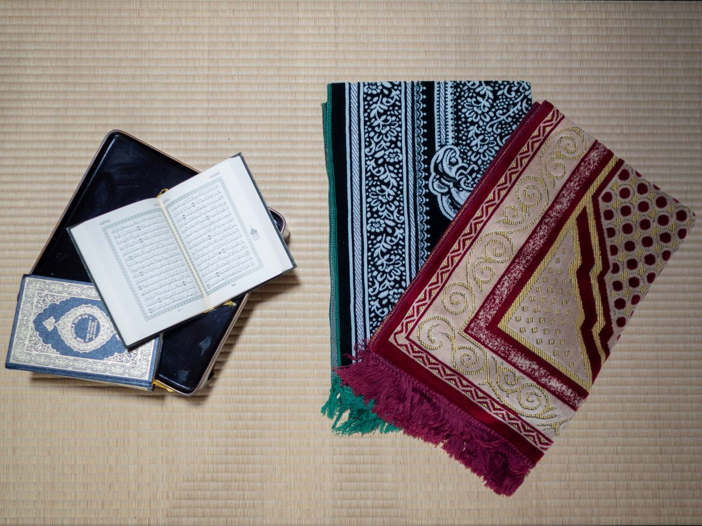
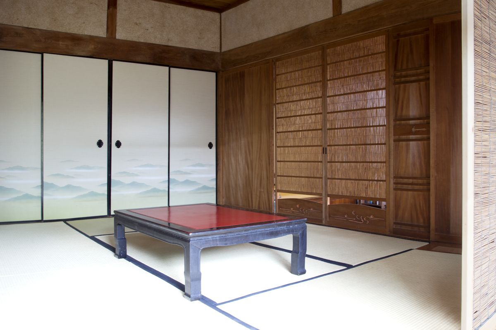
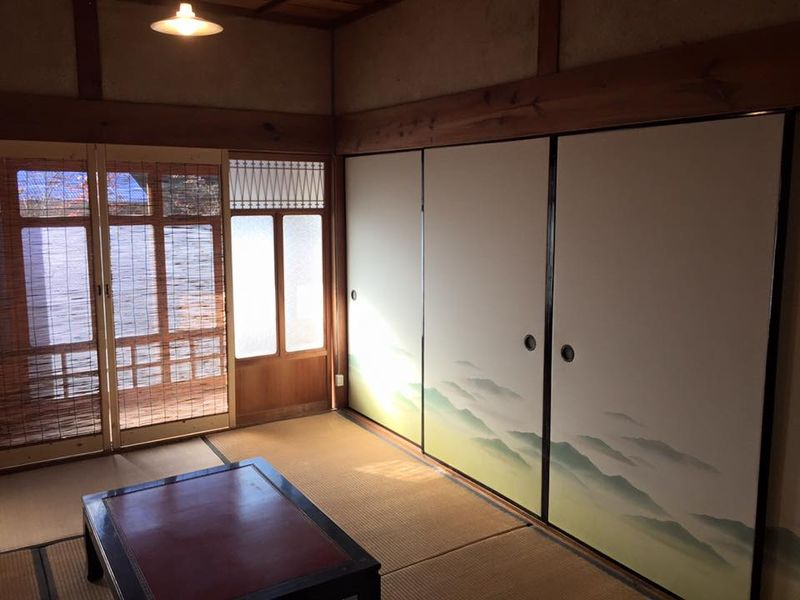
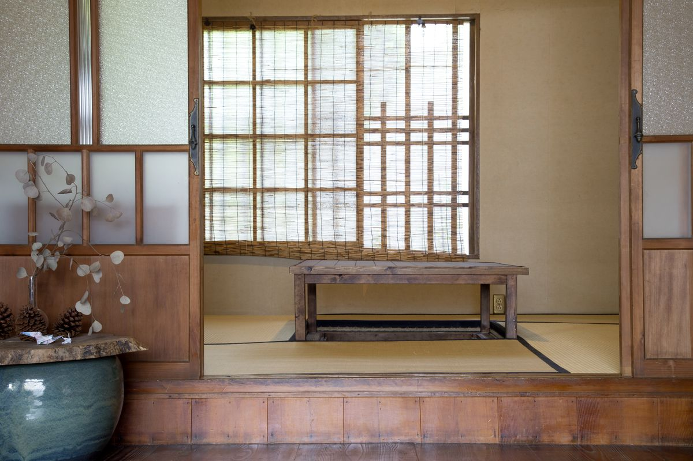
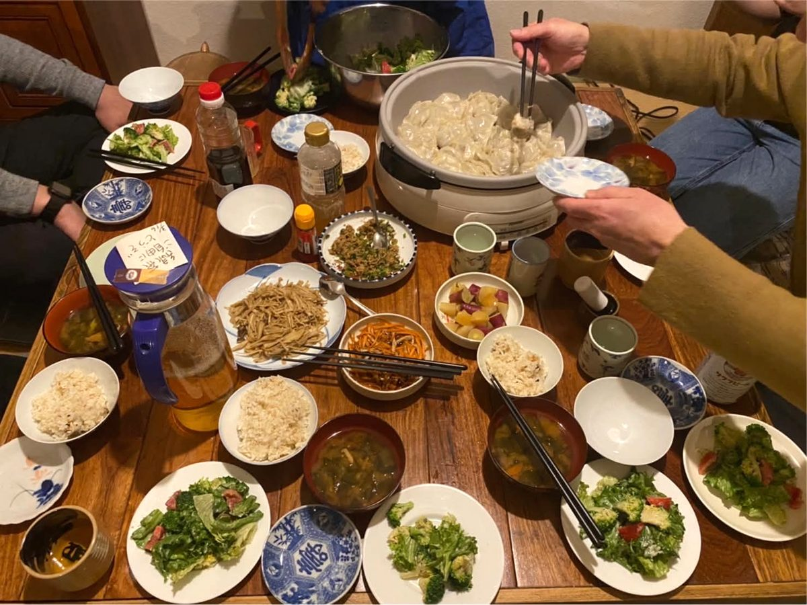
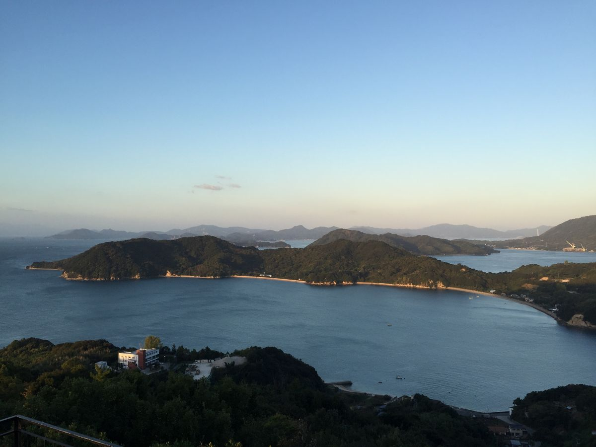
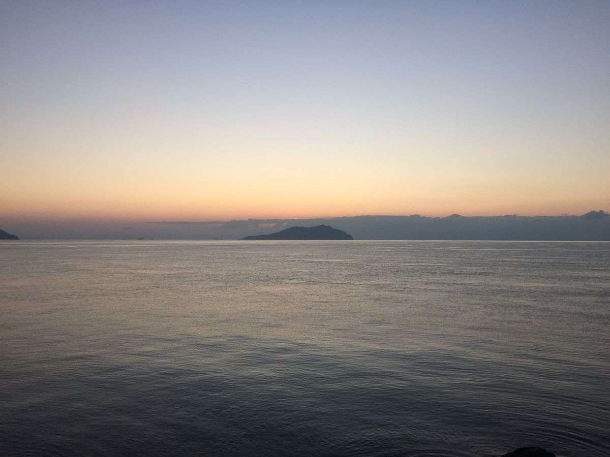

小さな島、大きな旅。
瀬戸内海に浮かぶ佐島の、築百年を越えた古民家です。
襖を開けると庭があり、土間には井戸があり、風呂は薪で焚く五右衛門風呂。
何もしないための場所が、ここにあります。
宿のあらまし
- 宿泊料
- 素泊り 1泊 5,500円小学生は半額、乳幼児1人まで無料
- 一棟貸し
- 1泊 30,000円
- 定員
- 7名これを超える場合や長期滞在はご相談ください
- チェックイン
- 15:00チェックアウト 10:00
- 所在地
- 愛媛県越智郡上島町弓削佐島299
よその宿には、たぶん無いもの
-

五右衛門風呂
薪で焚きます。井戸から汲んだ水を沸かすので、湯が軟らかい。焚きつけから湯加減まで、やりたい方にはお任せします。ご利用は前日までのご相談をお願いしています。
-

井戸
手押しポンプ、またはバケツで汲みます。五右衛門風呂に使う水はここから。飲用には適しません。
-

簡易イスラム礼拝室
クルアーンと礼拝マット、方角の印を用意しています。ムスリムの方が安心して泊まれる島の宿は、まだ多くありません。
-

掘りごたつとピアノ
足を下ろして座れる掘りごたつの間。ピアノもあります。弾いてください。
部屋
襖で仕切られた和室に布団を敷きます。相部屋で始めた宿ですが、いまは原則としてグループごとの個室です。
部屋と設備を詳しく見る-
-

-


シェアごはん
ほかのゲストやスタッフと一緒に、作る・食べる・片すをシェアします。料理が苦手でも大丈夫です。できることを手伝ってもらいます。島の人が差し入れを持って来て宴会になることもあれば、結局ひとりのこともあります。
夕飯 1,600円、朝飯 700円。火曜と日曜の夜はお休みです。
食事について
佐島まで
しまなみ海道の少し東にある離島です。弓削島、生名島、岩城島と橋で繋がっていて、この四島を結ぶ道を「ゆめしま海道」と呼びます。どこかで必ず船に乗ります。一番短い航路はたった3分。対岸には、ゆったりした島時間が待っています。
アクセスを見る
泊まりに来ませんか
空室の確認とご予約はこちらから。お電話でも承ります。